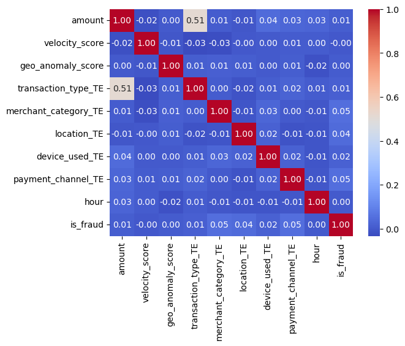
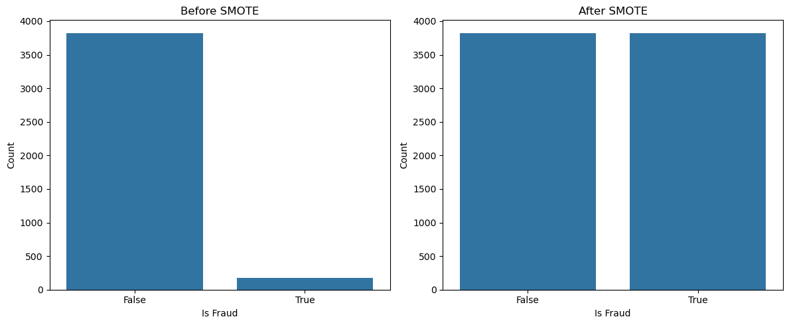
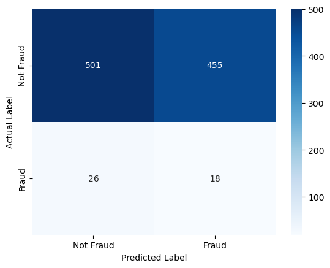
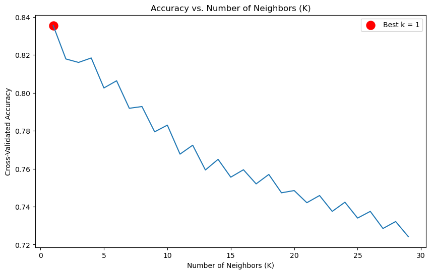
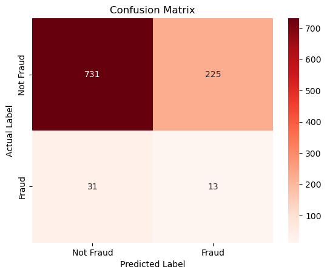
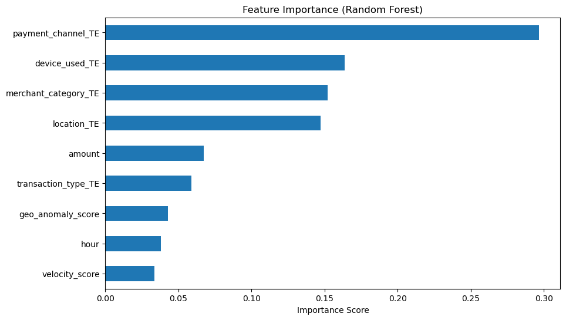
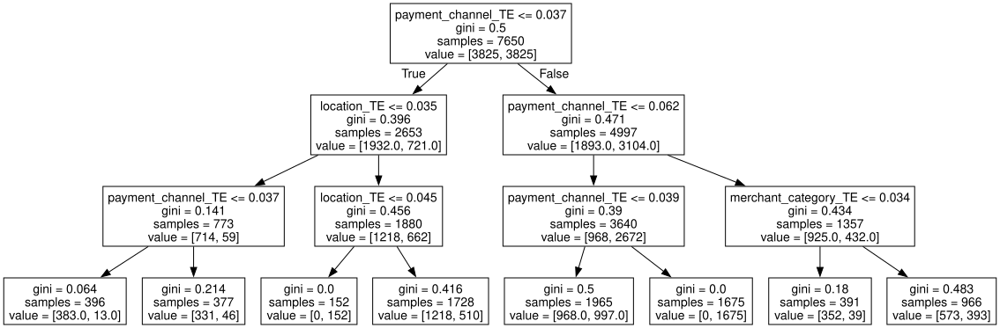
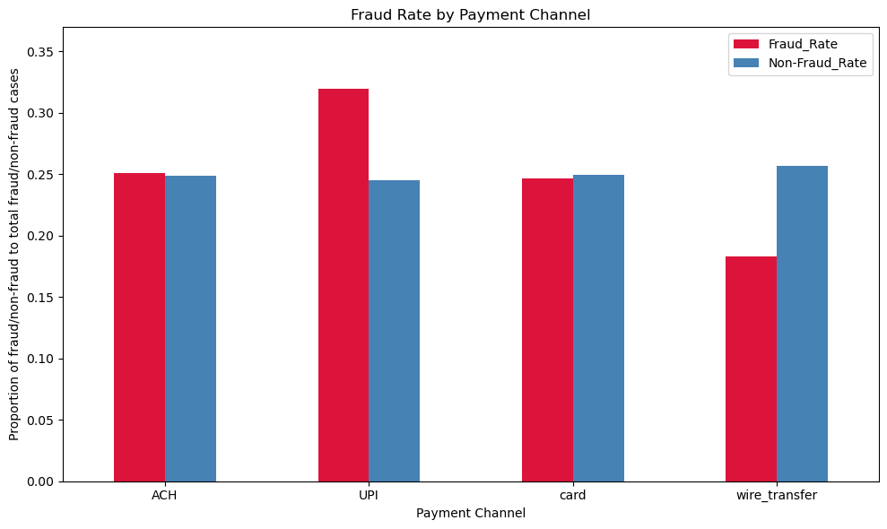

Fraud Detection#
Author: Madeline Chu
Course Project, UC Irvine, Math 10, Spring 25
I would like to post my notebook on the course’s website. Yes
https://www.kaggle.com/datasets/aryan208/financial-transactions-dataset-for-fraud-detection/data
Imports#
import pandas as pd
import seaborn as sns
import matplotlib.pyplot as plt
import numpy as np
import graphviz
from sklearn.neighbors import KNeighborsClassifier
from sklearn.model_selection import cross_val_score
from sklearn.ensemble import RandomForestClassifier
from imblearn.over_sampling import SMOTE
from sklearn.model_selection import StratifiedShuffleSplit, train_test_split
from sklearn.linear_model import LogisticRegression
from sklearn.metrics import confusion_matrix, classification_report, accuracy_score
from collections import Counter
from IPython.display import display
import graphviz
from sklearn.tree import DecisionTreeClassifier, export_graphviz
Stratified Sample#
The original data contained 5 million samples of financial transactions. I will be using a sample size of 5000.
I am stratifying the data by whether the activity is fraud or not, this will ensure that I have enough cases of financial fraud so I can analyze the relationship between the fraud and features.
# This is all code that I used to stratify the sample.
# Load the data set
df = pd.read_csv('/Users/madelinechu/Downloads/financial_fraud_detection_dataset.csv')
#change the NaN values from fraudtype to 'Not Fraud' so they don't get dropped
df['fraud_type'] = df['fraud_type'].fillna('Not Fraud')
#cleaning and reindexing so I can create a stratified sample
df_clean = df.dropna()
df_clean = df_clean.reset_index(drop=True)
#create an index for the column
target_col = 'is_fraud'
# Stratified sampling, these lines are from Chatgpt.
splitter = StratifiedShuffleSplit(n_splits=1, test_size=5000, random_state=8)
for _, sample_index in splitter.split(df_clean, df_clean[target_col]):
stratified_sample = df_clean.loc[sample_index]
# Use 3000 of the collected data
stratified_sample.to_csv('/Users/madelinechu/Downloads/stratified_fraud_sample_5000.csv', index=False)
# Show sample
stratified_sample.head()
| transaction_id | timestamp | sender_account | receiver_account | amount | transaction_type | merchant_category | location | device_used | is_fraud | fraud_type | time_since_last_transaction | spending_deviation_score | velocity_score | geo_anomaly_score | payment_channel | ip_address | device_hash | |
|---|---|---|---|---|---|---|---|---|---|---|---|---|---|---|---|---|---|---|
| 2185037 | T3154711 | 2023-03-30T07:15:17.369205 | ACC247896 | ACC799578 | 224.51 | withdrawal | utilities | Dubai | mobile | False | Not Fraud | -3339.180043 | 0.79 | 8 | 0.49 | card | 188.113.95.154 | D2057361 |
| 2482596 | T3461026 | 2023-10-02T00:28:00.955486 | ACC460461 | ACC454022 | 16.83 | payment | grocery | Berlin | mobile | False | Not Fraud | 2234.889287 | 0.80 | 18 | 0.06 | card | 203.60.84.46 | D4574144 |
| 181111 | T737613 | 2023-10-10T18:10:04.452613 | ACC169410 | ACC432109 | 89.04 | payment | other | Toronto | web | False | Not Fraud | -794.250890 | -0.36 | 8 | 0.32 | card | 152.29.53.109 | D6762473 |
| 3571094 | T4564845 | 2023-09-22T20:53:07.315571 | ACC492144 | ACC410595 | 4.12 | transfer | grocery | Dubai | web | True | card_not_present | 3705.568076 | 0.28 | 11 | 0.18 | ACH | 230.161.113.129 | D8221144 |
| 972296 | T1842120 | 2023-04-30T08:12:58.062014 | ACC339542 | ACC130395 | 393.32 | withdrawal | travel | Sydney | mobile | False | Not Fraud | -4001.069331 | 1.89 | 15 | 0.03 | ACH | 13.91.200.205 | D9433689 |
Features#
Transaction ID - ID number for each transaction.
Timestamp - Time which the transaction took place. In ISO format.
Sender Account - Account number of the sender.
Receiver Account - Account number of the receiver.
Amount - Amount involved in the transaction.
Transaction Type - Type of transaction: deposit, withdrawal, transfer, or payment.
Merchant Category - Type of business the payment was involved in. (retail, traveling, etc.)
Location - City the transaction happened.
Device Used - Type of device. (mobile, POS, ATM, etc.)
Is it Fraud? - Was it fraud, in booleans.
Fraud Type - Type of fraud. (Hacker, money laundering, account takeover, etc.)
Time Since Last Transaction - Time in hours between transactions.
Spending Deviation Score - Deviation from a gaussian distribution.
Velocity Score - Not the time but how many transactions made in a short period of time.
Geo Anomaly Score - Measure of how unusual the transaction was.
Payment Channel - Channel used: card, wire transfer, etc.
IP Address - IP addresses of the transaction.
Device Hash - A unique way of identification on a device.
Data Cleaning#
I will start by taking all my categorical data and turning it into numerical data. After doing some research, I was choosing between one-hot encode or target encoding however I ultimately wanted to the number of columns to a minimum so I will be applying the target encode method to my dataset.
#the indices of the columns that are categorical
encode_cols = ['transaction_type', 'merchant_category', 'location', 'device_used', 'payment_channel']
#Changing the date time format and only taking out the hour of the day the transaction was made.
#The decision was that I felt like hour of the day would most likely hold the most information with regards to being fraud/not-fraud.
stratified_sample['timestamp'] = pd.to_datetime(df['timestamp'], format='ISO8601', utc=True) #code fixed by chatgpt
stratified_sample['hour'] = stratified_sample['timestamp'].dt.hour
#splitting the data, (df is used but it is on the stratified sample)
train_df, test_df = train_test_split(stratified_sample, test_size=0.2, stratify=stratified_sample['is_fraud'], random_state=8)
stratified_sample.head()
| transaction_id | timestamp | sender_account | receiver_account | amount | transaction_type | merchant_category | location | device_used | is_fraud | fraud_type | time_since_last_transaction | spending_deviation_score | velocity_score | geo_anomaly_score | payment_channel | ip_address | device_hash | hour | |
|---|---|---|---|---|---|---|---|---|---|---|---|---|---|---|---|---|---|---|---|
| 2185037 | T3154711 | 2023-12-11 23:53:08.903327+00:00 | ACC247896 | ACC799578 | 224.51 | withdrawal | utilities | Dubai | mobile | False | Not Fraud | -3339.180043 | 0.79 | 8 | 0.49 | card | 188.113.95.154 | D2057361 | 23 |
| 2482596 | T3461026 | 2023-05-06 00:23:18.546703+00:00 | ACC460461 | ACC454022 | 16.83 | payment | grocery | Berlin | mobile | False | Not Fraud | 2234.889287 | 0.80 | 18 | 0.06 | card | 203.60.84.46 | D4574144 | 0 |
| 181111 | T737613 | 2023-03-29 01:48:24.296081+00:00 | ACC169410 | ACC432109 | 89.04 | payment | other | Toronto | web | False | Not Fraud | -794.250890 | -0.36 | 8 | 0.32 | card | 152.29.53.109 | D6762473 | 1 |
| 3571094 | T4564845 | 2023-11-28 09:11:16.099287+00:00 | ACC492144 | ACC410595 | 4.12 | transfer | grocery | Dubai | web | True | card_not_present | 3705.568076 | 0.28 | 11 | 0.18 | ACH | 230.161.113.129 | D8221144 | 9 |
| 972296 | T1842120 | 2023-04-05 05:37:45.332087+00:00 | ACC339542 | ACC130395 | 393.32 | withdrawal | travel | Sydney | mobile | False | Not Fraud | -4001.069331 | 1.89 | 15 | 0.03 | ACH | 13.91.200.205 | D9433689 | 5 |
#target column name and list of column indices
target_col = 'is_fraud'
feature_cols = ['amount',
'velocity_score',
'geo_anomaly_score',
'transaction_type_TE',
'merchant_category_TE',
'location_TE',
'device_used_TE',
'payment_channel_TE',
'hour']
#target mean for all columns
for col in encode_cols:
target_means = train_df.groupby(col)[target_col].mean() # command from chatgpt
train_df[f'{col}' + '_TE'] = train_df[col].map(target_means) # command from chatgpt
test_df[f'{col}' + '_TE'] = test_df[col].map(target_means) # command from chatgpt
corr = train_df[feature_cols + [target_col]].corr()
train_df.head()
#correlation matrix, code taken from Professor Ray's website
corr = train_df[feature_cols + ['is_fraud']].corr()
sns.heatmap(corr, annot=True, cmap="coolwarm", fmt = ".2f")
print(corr)
amount velocity_score geo_anomaly_score \
amount 1.000000 -0.024284 0.002632
velocity_score -0.024284 1.000000 -0.006721
geo_anomaly_score 0.002632 -0.006721 1.000000
transaction_type_TE 0.512677 -0.033048 0.008495
merchant_category_TE 0.005506 -0.025558 0.011403
location_TE -0.007487 -0.003133 0.009528
device_used_TE 0.043387 0.003006 0.001229
payment_channel_TE 0.028426 0.005446 0.011014
hour 0.027196 0.004868 -0.019790
is_fraud 0.009866 -0.003198 0.003820
transaction_type_TE merchant_category_TE location_TE \
amount 0.512677 0.005506 -0.007487
velocity_score -0.033048 -0.025558 -0.003133
geo_anomaly_score 0.008495 0.011403 0.009528
transaction_type_TE 1.000000 0.004880 -0.016420
merchant_category_TE 0.004880 1.000000 -0.009343
location_TE -0.016420 -0.009343 1.000000
device_used_TE 0.009352 0.027775 0.016785
payment_channel_TE 0.022888 0.003020 -0.013950
hour 0.006624 -0.005921 -0.011389
is_fraud 0.013632 0.051202 0.042580
device_used_TE payment_channel_TE hour is_fraud
amount 0.043387 0.028426 0.027196 0.009866
velocity_score 0.003006 0.005446 0.004868 -0.003198
geo_anomaly_score 0.001229 0.011014 -0.019790 0.003820
transaction_type_TE 0.009352 0.022888 0.006624 0.013632
merchant_category_TE 0.027775 0.003020 -0.005921 0.051202
location_TE 0.016785 -0.013950 -0.011389 0.042580
device_used_TE 1.000000 0.018502 -0.011701 0.018497
payment_channel_TE 0.018502 1.000000 -0.006758 0.050734
hour -0.011701 -0.006758 1.000000 0.002668
is_fraud 0.018497 0.050734 0.002668 1.000000

We can see that whether a case is constituted as fraudulent does not have a strong correlation with any of the features. However, this makes sense as a lot of the features take note of the instance of transaction and what device, amount or other characteristics these transactions have. If you think about the real world we would not expect that one characteristic of a transaction would affect very highly whether it is fraud or not.
Addressing the minority class#
In a data set like this, the number of fraudulent cases is expected to be a lot lower just because most financial transactions are not fraudulent. From a suggestion by chatgpt, I began to research SMOTE. SMOTE is advantageous because it creates more instances of the minority cases of the target feature. It is an interesting method as it takes from the concept of k-nearest neighbors in interpolating between the existing cases of fraud to create new cases of fraud.
code was learned from: https://www.geeksforgeeks.org/smote-for-imbalanced-classification-with-python/
#all feature columns
feature_cols = ['amount',
'velocity_score',
'geo_anomaly_score',
'transaction_type_TE',
'merchant_category_TE',
'location_TE',
'device_used_TE',
'payment_channel_TE',
'hour']
#applying smote
smote = SMOTE(random_state=8)
# separated the features from the target.
X_train = train_df[feature_cols]
y_train = train_df['is_fraud']
#resampling with SMOTE
X_train_resampled, y_train_resampled = smote.fit_resample(X_train, y_train)
#Separating my testing sets
X_test = test_df[feature_cols]
y_test = test_df['is_fraud']
# Plotting before and after smote results
#converting the training set to a panda series.
y_train_df = y_train_resampled.to_frame()
fig, axes = plt.subplots(1, 2, figsize=(12, 5))
sns.countplot(x = 'is_fraud', data = train_df, ax=axes[0])
axes[0].set_title('Before SMOTE')
axes[0].set_xlabel('Is Fraud')
axes[0].set_ylabel('Count')
sns.countplot(x = 'is_fraud', data = y_train_df, ax=axes[1])
axes[1].set_title('After SMOTE')
axes[1].set_xlabel('Is Fraud')
axes[1].set_ylabel('Count')
plt.tight_layout()

Logistic Regression#
Now I perform Logistic Regression by fitting on the training set and then predicting the train set. The logistic regression is fit with the SMOTE resampled set. Keep in mind that my my training and testing set only have features that I deem as important. For example, I did not include the columns that contained IP address, identification of case, etc.
model = LogisticRegression(max_iter=1000) # max_iter from chat gpt
# fitting the logistic regression
model.fit(X_train_resampled, y_train_resampled)
# predicting the amount of fraud from the testing set
Y_pred = model.predict(X_test)
Y_pred_series = pd.Series(Y_pred)
#resetting the index for the testing and predicted values.
Y_actual_new_idx = test_df['is_fraud'].reset_index(drop=True)
Y_pred_series = pd.Series(Y_pred).reset_index(drop=True)
#dataframe for compare test
df_compare_test = pd.DataFrame({ 'Actual' : Y_actual_new_idx, 'Predicted' : Y_pred_series})
#plotting a confusion matrix
confusion_mtrx = confusion_matrix(df_compare_test['Actual'], df_compare_test['Predicted'])
sns.heatmap(confusion_mtrx, annot=True, fmt='d', cmap='Blues', xticklabels=['Not Fraud', 'Fraud'], yticklabels=['Not Fraud', 'Fraud'])
plt.xlabel('Predicted Label')
plt.ylabel('Actual Label')
Text(50.722222222222214, 0.5, 'Actual Label')

It seems like a basic logistic regression did not accurately classify non-fraudulent cases. This make sense because logistic regression assumes a linear decision boundary, or in this case, a multidimensional plane. This then further assumes that theres a big distinction between fraudulent and non-fraudulent cases. However, this is not likely because it is very possible that the fraudulent case will be very similar to a non-fraudulent case.
Now we can try K nearest neighbors.#
We want to start by finding the optimal K.
#testing from 1 nn to 30.
k_range = range(1, 30)
#comparing the score for each value of k neighbors.
k_scores = []
for k in k_range:
knn = KNeighborsClassifier(n_neighbors=k)
scores = cross_val_score(knn, X_train_resampled, y_train_resampled, cv=5, scoring='accuracy')
k_scores.append(scores.mean())
#Plotting the accuracy of each k vs. the number I chose for k
plt.figure(figsize=(10, 6))
plt.plot(k_range, k_scores)
plt.title('Accuracy vs. Number of Neighbors (K)')
plt.xlabel('Number of Neighbors (K)')
plt.ylabel('Cross-Validated Accuracy')
best_k = k_range[np.argmax(k_scores)]
best_score = max(k_scores)
plt.scatter(best_k, best_score, color='red', s=150, label=f'Best k = {best_k}')
plt.legend()
plt.show()
print(f'Best k value: {best_k}')
print(f'Best Cross-Val-Score: {best_score:.4f}')
model_knn = KNeighborsClassifier(n_neighbors=best_k)
model_knn.fit(X_train_resampled, y_train_resampled)
y_pred_knn = model_knn.predict(X_test)
print(f'Accuracy: {accuracy_score(y_test, y_pred_knn)}')
print('Classification Report:')
print(classification_report(y_test, y_pred_knn, zero_division=0)) # code from chatgpt

Best k value: 1
Best Cross-Val-Score: 0.8356
Accuracy: 0.744
Classification Report:
precision recall f1-score support
False 0.96 0.76 0.85 956
True 0.05 0.30 0.09 44
accuracy 0.74 1000
macro avg 0.51 0.53 0.47 1000
weighted avg 0.92 0.74 0.82 1000
cm = confusion_matrix(y_test, y_pred_knn)
sns.heatmap(cm, annot=True, fmt='d', cmap='Reds',xticklabels=['Not Fraud', 'Fraud'], yticklabels=['Not Fraud', 'Fraud'])
plt.xlabel('Predicted')
plt.ylabel('True')
plt.title('Confusion Matrix')
plt.xlabel('Predicted Label')
plt.ylabel('Actual Label')
plt.show()

As we can see, the KNN method seems better at classifying cases than the logistic regression. For example, previously it predicted that 455 of the non-fraud cases were fraudulent however with the choice of 1 nearest neighbor, it classified only 225 non-fraudulent cases incorrectly. So we are seeing that in the case of fraud detection K-nearest neighbors seem more effective, this makes sense because rather than seeing a clear relationship between fraud cases, we are looking at data points that are close to each other.
Visualization of each feature and the target value.#
Now, I am interested in finding if there is a specifice feature that is prominent in all of these fraud cases. We will do this by looking at the Random forest importance graph.
Code adopted from: https://scikit-learn.org/stable/modules/generated/sklearn.ensemble.RandomForestClassifier.html
Code fixed by chatgpt.
# Train model
rf_model = RandomForestClassifier(random_state=8)
rf_model.fit(X_train_resampled, y_train_resampled)
# Plot feature importances
importances = rf_model.feature_importances_
feature_names = X_train_resampled.columns
# Create bar plot
plt.figure(figsize=(10, 6))
pd.Series(importances, index=feature_names).sort_values().plot(kind='barh')
plt.title('Feature Importance (Random Forest)')
plt.xlabel('Importance Score')
plt.show()

Note that payment_channel_TE has the highest importance value out of all our features. But the importance score is around 0.29, however that is not large compared to an importance value of 1.
Interpreting the decision tree.#
On the decision tree, the value is given in the form [non-fraud case, fraud case].
Code from: https://scikit-learn.org/stable/modules/tree.html
Learned from: https://www.geeksforgeeks.org/decision-tree-implementation-python/
import graphviz
from sklearn.tree import DecisionTreeClassifier, export_graphviz
# Create a decision tree classifier
clf = DecisionTreeClassifier(criterion='gini', max_depth=3, random_state=42)
# Fit the classifier on the dataset
clf.fit(X_train_resampled, y_train_resampled)
# Extract decision tree information
dot_data = export_graphviz(clf, out_file=None, feature_names=feature_cols)
# Create a graph object and render
graph = graphviz.Source(dot_data)
display(graph)

If you look at the final classification, and look at the second branch node to the right, it correctly determined that if the data’s payment_channel_TE value is \(0.039 \leq x \leq 0.062\). Then these cases will be fraud cases. So we can take a look at the relation of the payment channel with whether the case is fraud or not.
#We are looking at the rows that have this feature, but more specifically, the transaction type that corresponds to the value.
train_df.loc[(train_df['payment_channel_TE']>=0.039) & (train_df['payment_channel_TE']<=0.062)].head(3)
| transaction_id | timestamp | sender_account | receiver_account | amount | transaction_type | merchant_category | location | device_used | is_fraud | ... | geo_anomaly_score | payment_channel | ip_address | device_hash | hour | transaction_type_TE | merchant_category_TE | location_TE | device_used_TE | payment_channel_TE | |
|---|---|---|---|---|---|---|---|---|---|---|---|---|---|---|---|---|---|---|---|---|---|
| 2519793 | T3499115 | 2023-07-06 02:00:02.246527+00:00 | ACC536513 | ACC597424 | 46.06 | transfer | utilities | London | web | False | ... | 0.62 | UPI | 31.16.229.76 | D4775399 | 2 | 0.044834 | 0.033272 | 0.045455 | 0.040415 | 0.061866 |
| 3405053 | T4397515 | 2023-09-06 08:33:07.867799+00:00 | ACC598679 | ACC663765 | 16.46 | transfer | entertainment | New York | pos | False | ... | 0.69 | UPI | 100.127.10.209 | D8857882 | 8 | 0.044834 | 0.047170 | 0.053030 | 0.045498 | 0.061866 |
| 740399 | T1563167 | 2023-04-16 05:22:52.174555+00:00 | ACC804679 | ACC412353 | 1274.26 | deposit | online | Toronto | pos | False | ... | 0.16 | UPI | 138.129.139.178 | D5495797 | 5 | 0.046701 | 0.063877 | 0.035225 | 0.045498 | 0.061866 |
3 rows × 24 columns
#We want to count how many fraud cases there are per payment channel
fraud_count = stratified_sample[stratified_sample['is_fraud']==1].groupby('payment_channel').size()
nonfraud_count = stratified_sample[stratified_sample['is_fraud']==0].groupby('payment_channel').size()
#Then we find how many fraud cases there are vs. non-fraud cases
total_counts_fraud = stratified_sample.groupby('is_fraud').size()
#divide the fraud case per payment channel by total fraud case
fraud_rate = fraud_count/total_counts_fraud.iloc[1]
#divide the non-fraud case per payment channel by total non-fraud case
nonfraud_rate = nonfraud_count/total_counts_fraud.iloc[0]
#turn these values into a dataframe so they are easily plotted
rate_df = pd.DataFrame({'Fraud_Rate':fraud_rate,
'Non-Fraud_Rate': nonfraud_rate})
#plot the proportions nect to each other.
rate_df.plot(kind='bar', color=['crimson', 'steelblue'], figsize=(10,6))
plt.title('Fraud Rate by Payment Channel')
plt.xlabel('Payment Channel')
plt.ylabel('Proportion of fraud/non-fraud to total fraud/non-fraud cases')
plt.xticks(rotation=0)
plt.ylim(0, fraud_rate.max()+.05)
plt.tight_layout()
plt.show()

Conclusion#
In conclusion, although we have narrowed down where a lot of fraudulent cases come from, the relationship between fraud and the features I have included is inconclusive. Because we consider that while for the payment channel ‘UPI’, while a lot of the fraud cases corresponded to this payment channel, there is still many cases of non-fraud that makes mayment through UPI. So ultimately the data is inconclusive.